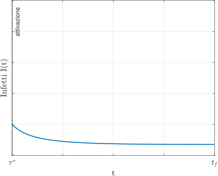

Università degli Studi di Verona
DIPARTIMENTO DI INFORMATICA
Corso di Laurea in Matematica Applicata
Tesi di Laurea Triennale
Strategie di controllo e stima dei parametri per modelli epidemiologici applicati al COVID19
| Tesi di laurea di: Andrea Mortaro |
Relatore: Prof. Dott. Giacomo Albi |
Introduzione
Il nostro obiettivo è la descrizione della situazione epidemica italiana causata dal COVID19 attraverso i modelli SIR e SEIR. I due principali concetti affrontati nella tesi sono:
- Strategie di controllo;
- Stima dei parametri epidemiologici dei modelli.
Il modello SIR
Il modello SIR
Alla base del modello vi è la suddivisione della popolazione in tre compartimenti:
- i Suscettibili (S), ovvero gli individui non infetti ma che possono contrarre l’infezione;
- gli Infetti (I), ovvero gli indidui in grado di trasmettere la malattia;
- i Rimossi (R), ovvero gli individui che non partecipano al processo epidemico, come i guariti e i deceduti;
Il modello SIR
Alla base del modello vi è la suddivisione della popolazione in tre compartimenti:
- i Suscettibili (S), ovvero gli individui non infetti ma che possono contrarre l’infezione;
- gli Infetti (I), ovvero gli indidui in grado di trasmettere la malattia;
- i Rimossi (R), ovvero gli individui che non partecipano al processo epidemico, come i guariti e i deceduti;
Il modello SIR
Supponiamo inoltre che:
- il tempo di incubazione della malattia sia trascurabile;
- il contagio avvenga per contatto diretto;
- mixing omogeneo;
- l'infezione conferisca una immunità permanente.
Il modello SIR
\[\begin{aligned} \left\{ \begin{alignedat}{3} \dot{S}(t) & = -\beta S(t)I(t) \\ \dot{I}(t) & = \beta S(t)I(t) {} - {} \gamma I(t)\\ \dot{R}(t) & = \gamma I(t) \end{alignedat} \right. \end{aligned} \]con parametri:
- $\beta$: tasso di trasmissione della malattia;
- $\gamma$: tasso di rimozione.
Il modello SIR
Il modello SIR
Si può dimostrare che il triangolo T è una regione positivamente invariante. \[ T = \Big\{ (S,I): S \geq 0,\;I \geq 0,\;S+I \leq N \Big\} \]
Il modello SIR
Come avviene per le infezioni causate da altri coronavirus, anche il COVID-19 presenta un periodo di incubazione e quindi risulta ragionevole estendere il modello SIR.
Il modello SEIR
Introduciamo una classe intermedia degli Esposti (E) che rappresenta gli individui contagiati ma non ancora infettivi.
Il modello SEIR
Introduciamo una classe intermedia degli Esposti (E) che rappresenta gli individui contagiati ma non ancora infettivi.

Il modello SEIR
\[ \begin{aligned} \left\{ \begin{alignedat}{3} \label{SEIR} \dot{S}(t) & = -\beta S(t)I(t) \\ \dot{E}(t) & = \beta S(t)I(t) - \mu E(t)\\ \dot{I}(t) & = \mu E(t) {} - {} \gamma I(t) \\ \dot{R}(t) & = \gamma I(t) \end{alignedat} \right. \end{aligned} \]dove $\mu$ rappresenta il tasso di incubazione dell’infezione.
Il modello SEIR
Il modello SEIR
Il tetraedro T è una regione positivamente invariante. \[ T = \Big\{ (S,E,I): S \geq 0,\;E \geq 0,\;I \geq 0,\;S+E+I \leq N \Big\} \]
Appiattire la curva
Appiattire la curva
A livello qualitativo, il modello SIR permette di sottolineare che un basso $\mathcal{R}_0$ abbia l’effetto di appiattire la curva degli infetti.
Appiattire la curva
A livello qualitativo, il modello SIR permette di sottolineare che un basso $\mathcal{R}_0$ abbia l’effetto di appiattire la curva degli infetti.
Un basso $\mathcal{R}_0$ permette di:
- diminuire il numero totale di morti per il virus e per altre cause
- guadagnare tempo per lo sviluppo di un vaccino.
Strategie di controllo
Strategie di controllo
I principali problemi di controllo riguardano:
- minimizzare il numero totale di infetti;
- minimizzare la durata dell'epidemia.
Controllo ottimo tempo ottimale
Riscriviamo il sistema SIR nella forma compatta $\dot{\boldsymbol{x}} = f(\boldsymbol{x})$, con $\boldsymbol{x}(t) = (S(t),I(t))^\top$.
Controllo ottimo tempo ottimale
Riscriviamo il sistema SIR nella forma compatta $\dot{\boldsymbol{x}} = f(\boldsymbol{x})$, con $\boldsymbol{x}(t) = (S(t),I(t))^\top$.
Applicando il generico termine di controllo $u(t)$, otteniamo il sistema controllato \[ \dot{\boldsymbol{x}}(t) = f(\boldsymbol{x}(t)) + u(t)g(\boldsymbol{x}(t)), \]
dove $g$ dipende dalla strategia di controllo scelta \[ \small g_l(\boldsymbol{x}) = \begin{pmatrix} -\alpha_1 S\\ -\alpha_2 I \end{pmatrix}. \]
Controllo ottimo tempo ottimale
Definizione (Tempo di eradicazione). Il tempo di eradicazione $T$ del problema SIR con controllo è il primo tempo per il quale il numero di infetti raggiunge una certa soglia $\varepsilon < 1$, dove $\varepsilon$ è una costante positiva fissata.
Controllo ottimo tempo ottimale
\[ \Tiny \begin{aligned} & \min_{u(t)} & & J(u) = \int_{0}^{T}1dt \quad \text{(Tempo di eradicazione)}\\ & \text{ t.c.} & & \dot{\boldsymbol{x}}(t) = f(\boldsymbol{x}(t)) + u(t)g(\boldsymbol{x}(t)),\quad t \geq 0;\\ &&& \boldsymbol{x}(0) = \boldsymbol{x}_0,\quad \boldsymbol{x}(T) \in \mathcal{C} = \left\{(S,I) : I = \varepsilon \right\}\\ &&& u : [0,+\infty) \rightarrow U = [0,u^{max}]~\text{continua a tratti}. \end{aligned} \]Controllo ottimo tempo ottimale
Teorema. Se $u_{l}^{*}$ è il termine lineare che rappresenta la strategia ottima per il problema di controllo, allora $u_{l}^{*}$ è un controllo bang-bang con un solo tempo di commutazione $\tau_{s}^{*}$, da nessun controllo a massimo controllo.
Controllo ottimo tempo ottimale
Teorema. Se $u_{l}^{*}$ è il termine lineare che rappresenta la strategia ottima per il problema di controllo, allora $u_{l}^{*}$ è un controllo bang-bang con un solo tempo di commutazione $\tau_{s}^{*}$, da nessun controllo a massimo controllo.
\[ \Tiny \begin{aligned} \mathcal{A} = \Bigl\{ & u :[0,+\infty) \rightarrow \left\{0,u^{max}\right\}~ \text{costante a tratti con al massimo} \\[10pt] & \text{un salto da 0 a } u^{max}, ~\lim_{t \to +\infty} u(t) = u^{max} \Bigr\}. \end{aligned} \]Vaccinazione
Il termine lineare per questa politica di controllo è \[ \alpha_1 = 1,~\alpha_2 = 0: \quad g_v(\boldsymbol{x}) = \begin{pmatrix} - S\\ 0 \end{pmatrix} \]
Vaccinazione
Il termine lineare per questa politica di controllo è \[ \alpha_1 = 1,~\alpha_2 = 0: \quad g_v(\boldsymbol{x}) = \begin{pmatrix} - S\\ 0 \end{pmatrix} \]
e otteniamo il sistema seguente \[ \left\{ \begin{alignedat}{2} \dot{S}(t) & = -\beta S(t)I(t) - u_{v}(t)S(t) \\ \dot{I}(t) & = \beta S(t)I(t) {} - {} \gamma I(t) \\ \end{alignedat} \right. \] con $u_{v}(t) \in \mathcal{A}$ termine di controllo per la politica di vaccinazione.
Vaccinazione
e otteniamo il sistema seguente \[ \left\{ \begin{alignedat}{2} \dot{S}(t) & = -\beta S(t)I(t) - u_{v}(t)S(t) \\ \dot{I}(t) & = \beta S(t)I(t) {} - {} \gamma I(t) \\ \end{alignedat} \right. \] con $u_{v}(t) \in \mathcal{A}$ termine di controllo per la politica di vaccinazione.
Teorema. Il tempo di commutazione $\tau_{s}^{*}$ può verificarsi solamente prima del picco delle infezioni.
Isolamento degli infetti
Il termine lineare per questa politica di controllo è \[ \alpha_1 = 0,~\alpha_2 = 1: \quad g_i(\boldsymbol{x}) = \begin{pmatrix} 0\\ - I \end{pmatrix} \]
Isolamento degli infetti
Il termine lineare per questa politica di controllo è \[ \alpha_1 = 0,~\alpha_2 = 1: \quad g_i(\boldsymbol{x}) = \begin{pmatrix} 0\\ - I \end{pmatrix} \]
e otteniamo il sistema seguente \[ \left\{ \begin{aligned} \dot{S}(t) & = -\beta S(t)I(t) \\ \dot{I}(t) & = \beta S(t)I(t) {} - {} \gamma I(t) - u_{i}(t)I(t)\\ \end{aligned} \right. \] con $u_{i}(t) \in \mathcal{A}$ termine di controllo nel caso dell'isolamento.
Isolamento degli infetti
e otteniamo il sistema seguente \[ \left\{ \begin{aligned} \dot{S}(t) & = -\beta S(t)I(t) \\ \dot{I}(t) & = \beta S(t)I(t) {} - {} \gamma I(t) - u_{i}(t)I(t)\\ \end{aligned} \right. \] con $u_{i}(t) \in \mathcal{A}$ termine di controllo nel caso dell'isolamento.
Teorema. Il tempo di commutazione $\tau_{s}^{*}$ può verificarsi dopo il picco delle infezioni e non necessariamente prima. Ritardare il controllo è strategia ottima anche quando il numero di infetti aumenta, ovvero per $\dot{I}(t)>0$.
Strategie a confronto

|
|
Controllo istantaneo mediante lockdown
Controllo istantaneo mediante lockdown
Il generico sistema controllato \[ \left\{ \begin{aligned} \dot{S}(t) & = -(\beta_0 + u(t)) S(t)I(t) \\ \dot{I}(t) & = (\beta_0 + u(t)) S(t)I(t) {} - {} \gamma I(t) \\ \end{aligned} \right. \] e l'insieme dei controlli ammissibili è \[ \begin{aligned} \mathcal{A} = \Bigl\{ u :[0,+\infty) \rightarrow [-\beta_0,0] \text{ tali che } \beta_0 + u(t) \geq 0 \Bigr\}. \end{aligned} \]
Controllo istantaneo mediante lockdown
\[ \begin{aligned} & \min_{u(t)} & & J(u(t);S_0,I_0) = \int_{t}^{t+\Delta t}\lvert I(t) \rvert + \frac{\eta}{2}\, \lvert u(t) \rvert^{2}dt\\ & \text{ t.c. } & & \dot{\boldsymbol{x}}(t) = f(\boldsymbol{x}(t)),\quad t \geq 0;\\ & & & u(t) \in \mathcal{A}; \end{aligned} \]
Modello $\kappa$-SIR
\[ \left\{ \begin{aligned} \dot{S}(t) & = -\biggl(\beta_0 -\frac{S(t)I(t)}{\kappa}\biggr) S(t)I(t) \\[4pt] \dot{I}(t) & = \biggl(\beta_0 - \frac{S(t)I(t)}{\kappa}\biggr) S(t)I(t) - \gamma I(t) \end{aligned} \right. \]
Modello $\kappa$-SIR
\[ \left\{ \begin{aligned} \dot{S}(t) & = -\biggl(\beta_0 -\frac{S(t)I(t)}{\kappa}\biggr) S(t)I(t) \\[4pt] \dot{I}(t) & = \biggl(\beta_0 - \frac{S(t)I(t)}{\kappa}\biggr) S(t)I(t) - \gamma I(t) \end{aligned} \right. \]
L'ammissibilità del controllo $u(t) \in \mathcal{A}$ è legata alla seguente condizione non lineare \[ \beta(t) \geq 0 \iff \kappa \geq \frac{S(t)I(t)}{\beta_0}. \]
Modello $\kappa$-SEIR
\[ \left\{ \begin{aligned} \dot{S}(t) & = -\biggl(\beta_0 -\frac{S(t)I(t)}{\kappa}\biggr) S(t)I(t) \\[4pt] \dot{E}(t) & = \biggl(\beta_0 -\frac{S(t)I(t)}{\kappa}\biggr) S(t)I(t) - \mu E(t)\\[4pt] \dot{I}(t) & = \mu E(t) - \gamma I(t) \end{aligned} \right. \]
Modello $\kappa$-SEIR
\[ \left\{ \begin{aligned} \dot{S}(t) & = -\biggl(\beta_0 -\frac{S(t)I(t)}{\kappa}\biggr) S(t)I(t) \\[4pt] \dot{E}(t) & = \biggl(\beta_0 -\frac{S(t)I(t)}{\kappa}\biggr) S(t)I(t) - \mu E(t)\\[4pt] \dot{I}(t) & = \mu E(t) - \gamma I(t) \end{aligned} \right. \]
L'ammissibilità del controllo $u(t) \in \mathcal{A}$ è legata alla seguente condizione non lineare \[ \beta(t) \geq 0 \iff \kappa \geq \frac{S(t)I(t)}{\beta_0}. \]
Modelli a confronto
|  |

|

|

|
Stima e calibrazione dei parametri
- stima dei parametri epidemiologici $\beta$ e $\gamma$ nella fase precedente al lockdown;
- stima del parametro di controllo $\kappa$ del modello $\kappa$-SIR.
 Dati forniti dal Dipartimento della Protezione Civile.
Dati forniti dal Dipartimento della Protezione Civile.
Stima e calibrazione dei parametri
- stima dei parametri epidemiologici $\beta$ e $\gamma$ nella fase precedente al lockdown;
\[ \min_{\beta,\gamma}\; \biggl( \int_{t_0}^{t_u} \phi\lvert I(t) -\hat{I}(t) \rvert^{2} + \psi\lvert R(t) -\hat{R}(t) \rvert^{2} dt \biggr)^{1/2} \]
sotto i vincoli $\beta \geq 0$ e $\gamma \geq 0$
con $\phi,\psi \geq 0$ tali che $\phi+\psi=1$
Stima e calibrazione dei parametri
- stima dei parametri epidemiologici $\beta$ e $\gamma$ nella fase precedente al lockdown;
\[ \min_{\beta,\gamma}\; \biggl( \int_{t_0}^{t_u} \phi\lvert I(t) -\hat{I}(t) \rvert^{2} + \psi\lvert R(t) -\hat{R}(t) \rvert^{2} dt \biggr)^{1/2} \]
| Italia | Lombardia | Veneto | Emilia-Romagna | |
|---|---|---|---|---|
| $\beta$ | 0.3088 | 0.2923 | 0.2457 | 0.3410 |
| $\gamma$ | 0.0495 | 0.0578 | 0.0165 | 0.0242 |
| $\mathcal{R}_0$ | 6.2352 | 5.0549 | 14.8884 | 14.0619 |
Stima e calibrazione dei parametri
- stima dei parametri epidemiologici $\beta$ e $\gamma$ nella fase precedente al lockdown;
\[ \min_{\beta,\gamma}\; \biggl( \int_{t_0}^{t_u} \phi(t)\lvert I(t) -\hat{I}(t) \rvert^{2} + \psi(t)\lvert R(t) -\hat{R}(t) \rvert^{2} dt \biggr)^{1/2} - \lambda(\beta,\gamma) \]
\[ \phi(t) = a_{\phi} \cdot A \cdot \frac{1}{1+e^{-c (t - t_0)}}, \quad \psi(t) = a_{\psi} \cdot A \cdot \frac{1}{1+e^{-c (t - t_0)}} \]
Stima e calibrazione dei parametri
- stima dei parametri epidemiologici $\beta$ e $\gamma$ nella fase precedente al lockdown;
\[ \min_{\beta,\gamma}\; \biggl( \int_{t_0}^{t_u} \phi(t)\lvert I(t) -\hat{I}(t) \rvert^{2} + \psi(t)\lvert R(t) -\hat{R}(t) \rvert^{2} dt \biggr)^{1/2} - \lambda(\beta,\gamma) \]
| Italia | Lombardia | Veneto | Emilia-Romagna | |
|---|---|---|---|---|
| $\beta$ | 0.3084 | 0.2926 | 0.2446 | 0.3408 |
| $\gamma$ | 0.0498 | 0.0585 | 0.0176 | 0.0253 |
| $\mathcal{R}_0$ | 6.1888 | 4.9984 | 13.896 | 13.472 |
Stima e calibrazione dei parametri
- stima dei parametri epidemiologici $\beta$ e $\gamma$ nella fase precedente al lockdown;
Stima e calibrazione dei parametri
- stima del parametro di controllo $\kappa$ del modello $\kappa$-SIR.
\[ \min_{\kappa(t_i)}\; \biggl( \int_{t_i - k_{l}h}^{t_i + k_{r}h} \phi\lvert I(t) -\hat{I}(t) \rvert^{2} + \psi\lvert R(t) -\hat{R}(t) \rvert^{2} dt \biggr)^{1/2} \]
con i vincoli $\kappa(t_i)>0$, $k_l$, $k_r \geq 1$ interi e utilizzando $\beta$ e $\gamma$ ottenuti in precedenza;
Regressione non lineare con $\kappa(t)=a \cdot e^{-bt} \cdot \big( e^{1-ct} \big)^{3}$.
Stima e calibrazione dei parametri
- stima del parametro di controllo $\kappa$ del modello $\kappa$-SIR.

Confronto SIR e SEIR
| $\beta$ | $\gamma$ | $\mu$ | $\mathcal{R}_0$ | |
|---|---|---|---|---|
| Italia | 0.4377 | 0.0807 | 0.3500 | 5.4257 |
Confronto SIR e SEIR
|
|
Stima dell'andamento effettivo di infezione con dati incerti
Stima dell'andamento effettivo di infezione con dati incerti
Consideriamo la variabile casuale $\boldsymbol{z}=(z_{1}, z_{2})$ con componenti indipendenti tale che \[ I(\boldsymbol{z},0) = I_0(1 + \mu z_{1}), \quad R(\boldsymbol{z},0) = R_0(1 + \mu z_{1}), \] \[ \beta(\boldsymbol{z}) = \beta_{e} + \alpha_{\beta} z_{2}, \quad \gamma(\boldsymbol{z}) = \gamma_{e} + \alpha_{\gamma} z_{2}. \]
Stima dell'andamento effettivo di infezione con dati incerti
\[ \left\{ \begin{aligned} \dot{S}(\boldsymbol{z},t) & = -\biggl( \beta_0 -\frac{S_{r}(t) I_{r}(t)}{\kappa(t)} \biggr) S(\boldsymbol{z},t) I(\boldsymbol{z},t) \\[2pt] \dot{I}(\boldsymbol{z},t) & = \biggl( \beta_0 - \frac{S_{r}(t) I_{r}(t)}{\kappa(t)} \biggr) S(\boldsymbol{z},t)I(\boldsymbol{z},t) - \gamma I(\boldsymbol{z},t) \end{aligned} \right. \]
Stima dell'andamento effettivo di infezione con dati incerti

|

|
Conclusioni e sviluppi futuri
Gli obiettivi di questo studio sono stati:
- lo sviluppo di un modello compartimentale con controllo feedback per lo studio della diffusione dell'epidemia COVID-19 in Italia;
- l'analisi del problema relativo all'affidabilità dei dati disponibili.
Conclusioni e sviluppi futuri
Gli sviluppi immediati di questo lavoro possono riguardare:
- la modelizzazione del parametro $\beta$;
- l'introduzione di stocasticità;
- l'inclusione dei casi asintomatici.